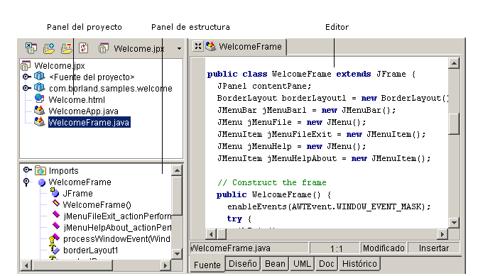

El editor ofrece una amplia gama de funciones de productividad, como la correspondencia de llaves de apertura y cierre, el resaltado de sintaxis, los atajos de teclado, la personalización de la configuración de teclado del editor, los atajos de codificación (CodeInsight, ErrorInsight, Sync Edit, JavadocInsight), las plantillas de código personalizables, la búsqueda y la impresión, así como un editor completamente personalizable.
Si desea modificar el código fuente, pulse dos veces en un archivo del panel del proyecto para abrirlo en el editor. En la parte superior del panel de contenido aparece una pestaña correspondiente al archivo abierto. Esto facilita el desplazamiento entre los archivos abiertos de un proyecto.

El cuadro de diálogo Opciones del editor (Herramientas|Opciones del editor) permite personalizar el entorno de edición. Es posible controlar las siguientes opciones del editor:
Si desea más información, consulte:
Introducción a JBuilder: El editor
Introducción a JBuilder: Personalización del editor